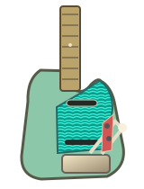

THE ANALOG TONE DESK / V4 · 134 TABS
Find your sound.
Your songs. Your guitars. Your BEAM Solo. Browse your Songsterr library and dial in a starting sound.
01 / INPUT CHANNEL LOCAL RECIPE LIBRARY
QUICK TUNES
02 / YOUR SONGSTERR COLLECTION
THE RECORD CRATE 134
Find songs by title, band, guitarist, genre or playlist. Select one to load a BEAM Solo starting recipe.
134IN THE CRATE
All 134 tabs included — 98 saved / 36 additional uploads. Uploads overlapping with favorites are shown once.
Artist tone ready
03 / TONE RECIPE
LINK WRAY / RAW & RUMBLING
ORIGINAL WORKBOOK / ARTIST RECIPECH.01 // YOUR INSTRUMENT
LINK WRAY
Raw, edgy low-gain drive, heavy picking.
SIGNAL READYSTARTING POINT • NOT AN EXACT REPRODUCTION
YOUR INSTRUMENT

Current strings
Traditional single-coils · 3-way switch
SIGNAL ROUTINGTAP A MODULE TO CHANGE GEAR
04 / PARAMETRIC CONTROL
MIXING DESK STARTING SETTINGS
4 FADERS + ISF • 0—10
ISF / INFINITE SHAPE FEATURE
Voicing control
ENGINEER'S NOTES
05 / REFERENCE LIBRARY
Built from real gear.
67Every amp, cabinet, mic and effect comes from your original BEAM Solo workbook. No imaginary pedals.
06 / THE COLLECTION
All 134 tabs included.
Your 98 saved entries and 36 additional uploads live right here — with real tab links, five instrument choices, and transparent starting-point recipes. No subscription or AI API is required.